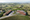
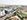
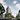
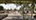
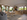

EDA Campus — Landscape & High-End Aerial Integration


Roig Arena — Drone Photography Integration & Urban Context

Rozafa Tower — High-Rise Commercial Exterior


Glories — High-End Residential Avenue View

Universidad Rosario — Institutional Complex Look-Development


Tabuk — Civic Walkway & Mosque Contemplation Study


Premium Residential Interior — Warm Minimalism Study